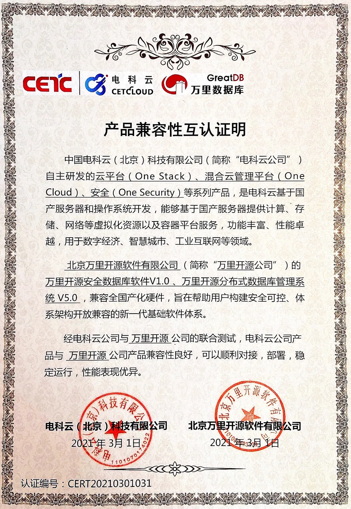

生态 | 万里数据库与电科云系列产品完成兼容互认证
近日，万里数据库系列产品与电科云公司自主研发的云平台、混合云管理平台、安全等系列产品经双方公司联合测试表明，产品兼容性良好，性能优异，可为企业级应用提供全面保障。

万里数据库&电科云兼容认证 ▲
万里数据库公司旗下的安全数据库软件、分布式数据库管理系统作为自主研发的关系型数据库软件，具有动态扩展、数据强一致、集群高可用等优势特性，满足业务高并发、高扩展性、高安全性等需求，并全面兼容国产软硬件，目前已适配龙芯、飞腾、鲲鹏、海光、麒麟、统信等主流国产软硬件平台，满足在全国产化平台上的部署与使用，旨在帮助用户构建安全可控、体系架构开放兼容的新一代基础软件体系。
中国电科云自主研发的云平台、混合云管理平台、安全等系列产品，是电科云基于国产服务器和操作系统开发，能够基于国产服务器提供计算、存储、网络等虚拟化资源以及容器平台服务，功能丰富、性能卓越，可充分适用于数字经济、智慧城市、工业互联网等领域。
此次万里数据库系列产品与电科云多款产品的完美兼容，为双方在国产基础软硬件领域展开更加深入、全面的合作打下了技术基础。
未来，万里数据库将与电科云在技术、业务方面积极开展合作，优势互补、形成合力，共同为政府信创领域发展添砖加瓦。
关于万里数据库
万里数据库（简称GreatDB）成立于2000年，专注于国产自主可控的数据库产品研发及业务推广，拥有多项发明专利及软件著作权。公司的技术底蕴源自对底层核心代码的掌控，以打造“新一代分布式数据库”为使命，产品始终坚持“极致稳定、极致性能、极致易用”核心目标，在功能、性能、稳定性、易用性等方面均处于行业领先水平，并广泛应用于金融、运营商、能源、政府等多个行业领域。
关于电科云
电科云（北京）科技有限公司是世界500强企业中国电子科技集团有限公司全资控股公司，坚持“打造面向党政军的自主安全云，做国家数据守护者”战略目标，聚焦“云+数+合规”主责主业，为党政军客户提供安全可靠的全方位、成体系、全流程的自主安全云产品和服务。
电科云完全自主可控，完全适配国产硬件，其云服务平台可广泛应用于国防军工、公共安全、电子政务和智慧城市等多个行业领域。
推荐阅读1.生态 | 万里数据库与电科云达成全面战略合作 共推信创产业生态做大做强
2. 生态|万里数据库加入绿色计算产业联盟，共推产业发展
3. 2021央采榜单花落谁家？万里安全数据库乘风而上 实力入围


扫码二维码
关注公众号